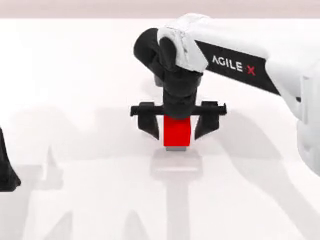
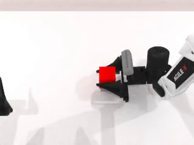

grasp_cube_approach · 同一个方块，指令里的接近方向词（“从顶部” vs “从侧面”）是唯一变量——测 policy 是否服从指定的抓取构型，而不是默认用自己最省力的顶抓。choose_grasp_pose 在 4 个侧面里乱选、常选中机械臂够不到的面。锁定可达的 face 6 → 100%。论文 RoboTwin-IF 里「动词」和「目标物体」是耦合的。IF-Ext 要把各能力轴解耦，单独诊断。本任务测的轴是抓取接近方向：物体固定、两种抓法都物理可行、动词都是「抓」，唯一区分量是指令里的抓法词。真正要暴露的失败模式是：policy 学到「小方块→顶抓」的惯性先验，无视指令里的「从侧面」。
这是把 spike 变成真 IF 任务的关键一步。四件事同源——都锁在 seed 上：mode 由 seed 生，指令方向短语由 mode 渲染，check_success 读同一个 seed 派生的 mode。缺任何一环，任务就悄悄不再测「指令跟随」。
tests/grasp_cube_approach/check_if_wiring.py 实测）| seed | mode | 指令 {D} | oracle 抓法 | 朝向 |az| | check |
|---|---|---|---|---|---|
| 0 | top | “from the top” | 竖直下压（接触组 0-3） | 1.00 竖直 | ✓ |
| 1 | side | “from the side” | 水平侧入（face 6） | 0.10 水平 | ✓ |
| 2 | top | “from above” | 竖直下压 | 1.00 竖直 | ✓ |
| 3 | side | “from the side” | 水平侧入 | 0.10 水平 | ✓ |
| … | 交替 | 按 scene_seed 轮换措辞 | … | … | ✓ |
POSE_JITTER=False（spec 要求「放中央固定」），所以所有 seed 的场景逐像素相同。预采集诊断（N=20）观测到：1 个场景 / 20 seed，且该场景同时挂 modes=['side','top']——正是配对结构。policy 看到的初始画面完全一样，唯一差别是指令方向词。
SIDE_FACE=6 绑定 x=0/右臂，抖动下 x 变号换臂就失效，需按臂动态选面）。同一个红方块架在灰 riser 上，初始画面一致；只有指令方向词不同 → 末态夹爪朝向一眼可分。

approach_axis_z=1.0（竖直）。
approach_axis_z=0.1（水平）。这两段证明了核心设计跑通：同一 seed 序列、同一场景，seed 0 出竖直顶抓、seed 1 出水平侧抓，且每条数据的 mode / {D} / 朝向 都由 seed 正确派生（见下 scene_info.json）。
scene_info.json）| episode | seed | mode | {D} | arm | orientation_match | approach_axis_z | lifted |
|---|---|---|---|---|---|---|---|
| 0 | 0 | top | from the top | right | ✓ | 1.0 | ✓ |
| 1 | 1 | side | from the side | right | ✓ | 0.1 | ✓ |
gen_episode_instructions → instructions/episodeN.json）每条 demo 的 token（{A}/{a}/{D}）填进模板池，确定性替换出自然语言指令——方向词随 mode 切换，是唯一区分信号：
| 检查 | 结果 | 脚本 |
|---|---|---|
| Oracle spike（固定位姿 N=30） | 顶 100% / 侧 100% / 反例 0% | spike_success_rate.py |
| 逐面可达率扫描 | face6=100% · face4=87% · face5/7=0% · auto=73% | sweep_side.py |
| IF 接线（seed→mode→instruction→check） | seed 偶→top / 奇→side 全 PASS | check_if_wiring.py |
| 预采集诊断（N=20） | overall 20/20；top 10/10、side 10/10；1 场景挂两 mode | tools/task_diag.py |
create_box 后直接改 self.cube.config["contact_points_pose"]——顶抓复用默认 box 的 top_down 组 [0-3]，侧抓用 create_actor 里注释掉的水平接触组 [4-7]。不动 submodule native 文件。RISER_HALF=(0.02,0.02,0.012)），把整个方块抬离桌面，侧抓下指清桌面——解决了原设计担心的撞桌。check_success 保持严格 lifted AND oriented 供采集门控；新增 eval_signals() 把 orientation_match（IF 信号）和 lifted（执行）分开输出，eval 主报朝向 + 顶/侧 gap。APPROACH 降级：从「env 变量」降为 harness 专用 override（默认 None→按 seed 派生）。lifted AND oriented 会让侧抓的 0 分歧义（没读指令 vs 读了但没夹住）。方向性判据把「读懂了」和「执行成功」分开，才让任务在唯一在场的协议下成立。| 项 | 状态 |
|---|---|
| 机制 + 朝向判据 + 双抓法 oracle | ✓ 已验（100/100/0） |
| seed→mode→instruction→check 同源接线 | ✓ 已验（wiring + diag + scene_info） |
| 反例（用错抓法即使举起也判失败） | ✓ 0% 通过 |
| 逐 episode 指令渲染（模板填槽 → 自然语言） | ✓ 已验（top→“from the top” / side→“from the side”） |
接入 all_tasks_plus_if.yml | ✗ 未做（⑤） |
| policy eval | ✗ 未做（⑥） |
./bridge_tasks.sh # 把任务符号链接注入 submodule
conda activate RoboTwin
# oracle spike（固定位姿，顶/侧/反例）
GRASP_CUBE_FIXED=1 python tests/grasp_cube_approach/spike_success_rate.py 30
# IF 接线检查（seed 偶→top / 奇→side）
python tests/grasp_cube_approach/check_if_wiring.py 3
# 预采集诊断（成功率 + 模式平衡 + seed→scene）
python tools/task_diag.py grasp_cube_approach 20 demo_clean
# 实采（一次出双模式：seed0=top, seed1=side）
bash collect_data.sh grasp_cube_approach demo_clean 0 # 在 submodule 内
# 指令渲染（token 填模板 → instructions/episodeN.json）
cd description && bash gen_episode_instructions.sh grasp_cube_approach demo_clean 2深读：同目录 design-review.md（基准有效性 8 维校验）· 跨会话记忆 grasp-approach-spike · 流水线 SOP docs/task-design/IF任务实现流水线-SOP.md。